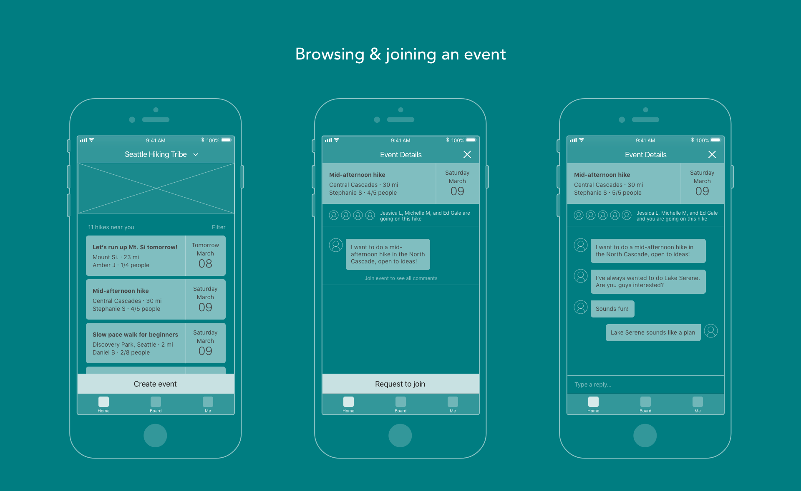
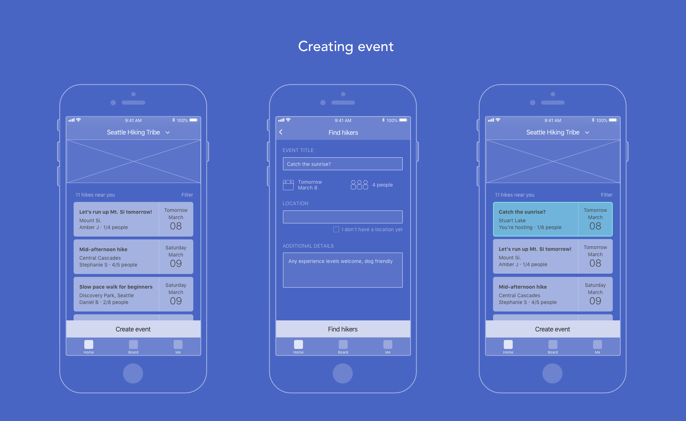

Tribalway
Overview
In 2016, I spent three months working for a startup, Tribalway, as the sole designer. I was hired by a startup of engineers and PMs who needed UX help with solving a social problem: A lot of the popular social apps don't facilitate in-person social interaction. Instead, these social apps serve as a bulletin board for people to share about their lives. Tribalway wanted to do something different and encourage social interaction in person. The team had a goal of connecting people to a "tribe" — a close-knit community centered around an activity, a common interest or life situation. The mission was to get people together in person and for the app to serve as a place to look ahead and plan rather than look at what already has happened.
Process
My role was to take the problem of social isolation and the team’s mission and create ideas and wireframes for an app prototype. In addition to tackling the problem, I had to keep in mind the business aspect of the app and ensure that the final solution had a distinct value proposition.My solution focuses on the user joining local communities they identify with such as a hiking community or a new-mothers community. From that point on, the design of the Tribalway app encourages the user to join or set up get-togethers with other members. Tribalway optimizes for people with hectic schedules who can’t make social plans too far in advance. Once a person gets a day that frees up, a lot of times it’s too late to join a lot of group events that are happening as they’re already booked up. Tribalway focuses on get togethers that are happening within a week. And if there is nothing that fits the user’s needs, a get together can be created by anyone in the community.
Now let’s dive into the app wireframes!
I used a tribe centered around hiking as my example. To fulfill the primary mission of getting people out of the house and off their screens, I made the home page of the app to be a feed of get-togethers. These get-togethers are close to the user, looking for more people to join, and are happening soon. This makes it very easy for the user to join an event whenever the person has time and not worry about having to plan in advance.
Unlike some event apps that have dedicated organizers, anyone can set up an event — whether they’re looking for one other mom to go to the playground with or they want to set up a painting night.
The first set of wireframes shows the event-focused home page, event details page and the ability to request to join an event. The event details page contains information such as the meeting location, date, participants and the detail page has a group chat that can only be seen by the attendees.

The second set of wireframes captures the scenario of a user wanting to set up a gathering. The home page has an entry point to create an event, the user then sets the parameters of the event and then it will show up on other people’s home pages. All that the user has to do then is wait and approve requests.
